Repair Procedures
Replacement
[Disc Type]
1. Remove the rear wheel & tire.
Tightening torque :
88.3 - 107.9N.m(9.0 - 11.0kgf.m, 65.1 - 79.6lb-ft)
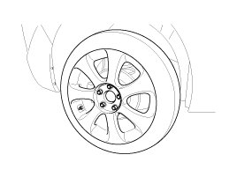
CAUTION:
Be careful not to damage to the hub bolts when removing the rear wheel & tire.
2. Loosen the bolt and then remove the parking brake cable (A) from the caliper.
Tightening torque :
18.6 - 25.5 N.m(1.9 - 2.6kgf.m, 13.7 - 18.8 lb-ft)
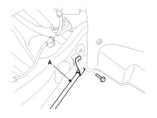
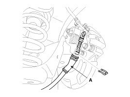
3. Loosen the bolt and then remove the wheel speed sensor cable (A).
Tightening torque :
6.9 - 10.8 N.m(0.7 - 1.1kgf.m, 5.1 - 8.1 lb-ft)
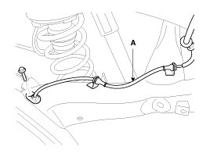
4. Remove the brake caliper assembly(B) from the torsion beam axle by loosening the bolts (A).
Tightening torque :
63.7 - 73.5N.m(6.5 - 7.5kgf.m, 47.0 - 54.2 lb-ft)
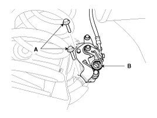
5. Loosen the bolt and then remove the rear shock absorber (A) from the frame.
Tightening torque :
98.1 - 117.7N.m (10.0 - 12.0kgf.m, 72.3 - 86.8lb-ft)
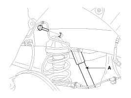
6. Loosen the bolt & nut and then remove the rear shock absorber (A) from the torsion beam axle.
Tightening torque :
98.1 - 117.7N.m (10.0 - 12.0kgf.m, 72.3 - 86.8lb-ft)
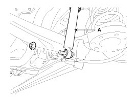
7. Remove the rear wheel housing (A).
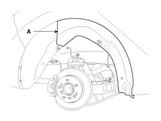
8. Remove the torsion bean axle assembly (A) from the torsion beam axle by loosening the bolts.
Tightening torque :
137.3 - 156.9N.m(14.0 - 16.0kgf.m, 101.3 - 115.7lb-ft)
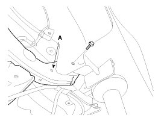
9. Remove the rear hub assembly.
10. Installation is the reverse of removal.
[Drum Type]
1. Remove the rear wheel & tire.
Tightening torque :
88.3 - 107.9N.m (9.0 - 11.0kgf.m, 65.1 - 79.6lb-ft)
2. Remove the parking brake cable clip (A).
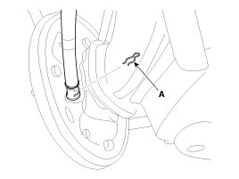
3. Loosen the bolt and then remove the parking brake cable (A).
Tightening torque :
18.6 - 25.5N.m (1.9 - 2.6kgf.m, 13.7 - 18.8lb-ft)
4. Loosen the screw(B) and then remove the disc (A).
Tightening torque :
4.9 - 5.9N.m (0.5 - 0.6kgf.m, 3.6 - 4.3lb-ft)
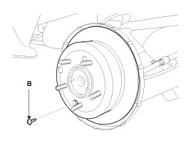
5. Remove the spring(A, B, C).
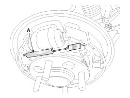
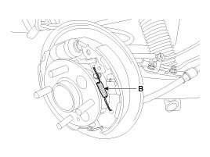
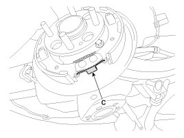
6. Remove the shoe (A).
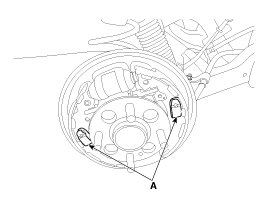
7. Disconnect the parking brake cable (A) from lining(B).
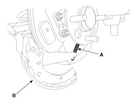
8. Loosen the bolt and then remove the brake hose (A).
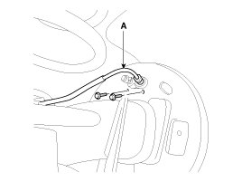
9. Loosen the bolt and then remove the rear shock absorber (A) from the frame.
Tightening torque :
98.1 - 117.7N.m (10.0 - 12.0kgf.m, 72.3 - 86.8lb-ft)
10. Loosen the bolt & nut and then remove the rear shock absorber (A) from the torsion beam axle.
Tightening torque :
98.1 - 117.7N.m (10.0 - 12.0kgf.m, 72.3 - 86.8lb-ft)
11. Remove the rear wheel housing (A).
12. Loosen the bolt and then remove the torsion beam axle (A) from the body.
Tightening torque :
137.3 - 156.9N.m (14.0 - 16.0kgf.m, 101.3 - 115.7lb-ft)
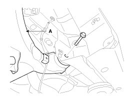
13. Remove the rear hub assembly.
14. Install in the reverse order of removal.